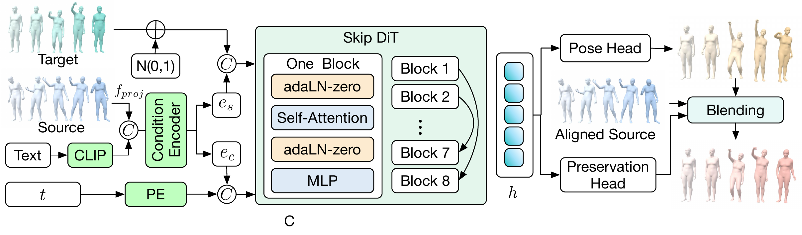

\(\hat{x}_0=\sqrt{\bar\alpha_t}\,x_t-\sqrt{1-\bar\alpha_t}\,\hat{v},\quad g=\sigma(\mathrm{MLP}(h)),\quad \tilde{x}_0=\hat{x}_0+g\odot(\bar{s}-\hat{x}_0)=(1-g)\odot\hat{x}_0+g\odot\bar{s}\)
Every reverse step is split into generation and preservation. The backbone predicts velocity as usual; the sampler converts it to a clean estimate \(\hat{x}_0\) and nudges that estimate toward the time-aligned source wherever the learned keep-gate is open, then takes a standard DDPM posterior step. The correction never returns to \(v\)-space.
"move faster"
"bow down aggressively and quickly several times. keep both hands on your hips"
"bob up and down"
"straighten knees"
"take a long sidestep to the right"
"turn body a little more to the left"
"take wider steps"
"more energy"
"faster"
"slightly straighten up, but not fully"
Left to right: Source, MDM, TMED, SimMotionEdit, OmniME, MotionRefit, Ours, Target. Videos loop. Prior editors flatten the requested change or regenerate body parts that should have stayed on the source.
"Lift the other leg."
"Raise the other leg upward."
"The upper body faces forward."
"The lower body turns to the other side and runs away."
"The lower body runs to the other side."
"The upper body is sitting upright."
"Bend the other arm."
Left to right: Source, TMED, SimMotionEdit, OmniME, Ours, Target. Videos loop. The same source-preserving sampler applies a localized body-part change without rewriting the rest of the clip.
| Method | B R@1 \(\uparrow\) | B R@2 \(\uparrow\) | B R@3 \(\uparrow\) | B AvgR \(\downarrow\) | F R@1 \(\uparrow\) | F R@2 \(\uparrow\) | F R@3 \(\uparrow\) | F AvgR \(\downarrow\) |
|---|---|---|---|---|---|---|---|---|
| Copy source | 74.79 | 85.42 | 91.25 | 1.88 | 30.24 | 44.47 | 54.35 | 15.53 |
| MDM (Tevet et al. 2022b) | 4.03 | 7.56 | 10.48 | 15.55 | 0.10 | 0.10 | 0.10 | -- |
| MDM-BP (Tevet et al. 2022b) | 39.10 | 50.09 | 54.84 | 6.46 | 8.69 | 14.71 | 18.36 | 180.99 |
| MotionLab (Guo et al. 2025) | 54.53 | 70.02 | 77.38 | 3.42 | -- | -- | -- | -- |
| TMED (Athanasiou et al. 2024) | 62.90 | 76.51 | 83.06 | 2.71 | 14.51 | 21.72 | 28.73 | 56.63 |
| MotionRefit (Jiang et al. 2025) | 66.63 | 80.05 | 84.98 | 2.64 | 14.13 | 23.52 | 30.53 | 54.06 |
| SimMotionEdit (Li et al. 2025) | 70.62 | 82.92 | 88.12 | 2.38 | 25.49 | 39.33 | 49.21 | 23.49 |
| PartMotionEdit (Yang et al. 2025) | 73.96 | 85.83 | 90.21 | 1.92 | 27.27 | 45.06 | 53.36 | 16.24 |
| Han et al. (Han & Kim 2026) | 74.38 | 88.54 | 92.08 | 1.92 | 29.45 | 45.26 | 54.55 | 16.42 |
| OmniME (Shi et al. 2026) | 77.29 | 88.54 | 91.88 | 1.79 | 32.02 | 50.20 | 59.88 | 13.06 |
| Ours | 79.17 | 89.17 | 92.92 | 1.68 | 33.20 | 50.79 | 59.09 | 12.87 |